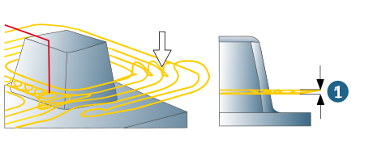
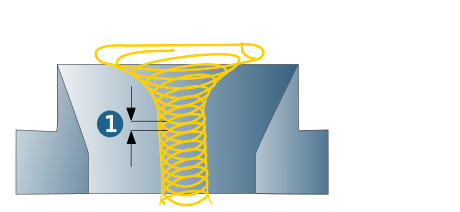
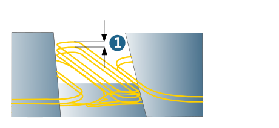

High Performance
High Performance Roughing
High Performance Mode: To use the function, select the High Performance Mode checkbox.
 |
Opening cut: enable function when an opening cut should be carried out.
Zigzag: enable function when machining with alternating orientation should be enabled.
Two different strategies are available in High Performance Mode: Opening cut and Side mill only.
The following applies to both strategies:
-
The toolpaths created with hyperMILL are optimized in terms of the minimum machining time at maximum removal rate, taking into account dynamic feedrate values for different machining situations.
-
The Fillet radius parameter must be at least 5% of the tool diameter.
Opening cut (1): If this option is enabled, narrow, inaccessible areas (A) with several vertical stepdowns (full cut) can be opened. A trochoidal strategy may be used. hyperMILL determines the most suitable strategy for the particular machining situation internally in terms of the shortest overall machining time.
Side mill only (2): If this option is enabled, no full cut behavior is allowed. Narrow, inaccessible areas (A) are opened with trochoidal movements.
Reposition
For both strategies (Opening cut and Side mill only) the following applies:
Safety (1): axial movement (in the Z direction) away from the plane currently being machined. Default value: Clearance distance * 0.1.
Feedrate: Value for the maximum achievable Feedrate for all movements to reposition the tool without material removal.
|  |
Infeed
Dense area stepover (factor) (1): The value is multiplied by the Stepover (factor of diameter) (see Parameters dialog page) and defines the lateral infeed for trochoidal movements in narrow, inaccessible areas. A reduction in the horizontal stepover in narrow areas may be particularly useful for hard materials.
|  |
Plunge feedrate: Feedrate for plunge movement ( macros) in pockets that cannot be accessed from outside (closed pockets). Min. Enable feedrate to specify a minimum value for the plunge feedrate.
Opening cut
For the opening cut, both the vertical stepdown and the feedrate can be adjusted to the particular machining situation.
Vertical stepdown (1): The number of stepovers (vertical stepdown) is calculated from the total infeed defined.
|  |
Example: If the total infeed is 2 and the vertical stepdown for the opening cut is 0.5, machining occurs in 4 infeeds.
Feedrate: value for the maximum achievable feedrate for the opening cut.
Enable min. feedrate to specify a minimum value for the opening cut feedrate.
Note
A change in the feedrate for the opening cut may change the machining strategy for narrow areas (trochoidal > full cut). hyperMILL determines the most suitable strategy internally in terms of the shortest overall machining time, taking into account the feedrate value.
Entry feedrate
A targeted feedrate adjustment at the moment of entry into the material can be especially useful with hard workpiece materials.
Factor side entry regulates the lateral approach (not when the position is tangential to the contour) from outside and is referenced to the feedrate XY of the tool.
Factor plunge entry affects the helical or ramp plunge into the material from above. This factor is calculated with plunge feedrate.
Zigzag feedrate
Feedrate: Factor that influences the feedrate of the opposite direction. If climb milling is chosen as cutting mode, the opposite direction feedrate, i.e., the conventional milling feedrate, is reduced by the specified factor. The 0.8 factor equates to a feedrate reduction of 20%.
The following restrictions apply in High Performance Mode:
Dialog page Tool
Corner fillet radius must be greater than 0.05* tool diameter. In the case of tools with a core, the core diameter must be smaller than 0.9* tool diameter, and smaller than the flat part of the tool. Ball endmills with core are not permitted. For bullnose end mills, the following applies: core diameter *0.5 must be smaller than the radius - corner radius.
Dialog page Strategy
Plunge points are not supported. The Use adaptive pocket option is not available. No G2/G3 movements can be generated in the 3D Mode.
Dialog page Parameters
Fillet all toolpaths is enabled by default. The Radius for horizontal infeed parameter is not available. The negative stock allowance XY must not be greater than 0.25 * tool diameter in the 2D mode / Stock mode.
The conditions that govern the 3D Mode depend on the tool type:
Endmill: no negative XY allowance allowed. If (stock allowance XY - stock allowance Z) < 0, the absolute value of this difference must be smaller than the tool radius.
Ball endmill: Absolute value of the negative stock allowance XY < tool radius. Stock allowance XY must be greater than stock allowance Z.
Bullnose endmill: negative stock allowance is only permitted up to the absolute value <= corner radius. If (stock allowance XY - stock allowance Z) < 0, the absolute value of this difference must be smaller than (radius - corner radius) of the tool.
The retract mode is set to retraction plane.
Dialog page Macros
Only the Ramp or Helical plunge macro is available as a macro. When using the Helical plunge macro, the helix radius of the cycle is calculated automatically. The angle must be greater than 0.01.